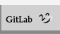

Lex2line is a simple way to create HTML code based on something similar to Markdown in a certain sense with the purpose of making something decent and useful.
This editor allows you to create and view content in Markdown format, converting it to HTML in real time. As you type in the editor area, the content is converted and displayed in the preview. Below is a detailed guide on how to use each available feature.
Use h1-#FF5733 to create a level 1 header with the color #FF5733. Similarly, h2-#33C1FF creates a level 2 header with the color #33C1FF.
Use headers to structure your content and highlight important sections. You can specify a color for each header by adding a hexadecimal color code after the header size.
Use  to insert an image with the provided URL and an alternative description.
Use this syntax to add images to your content. Ensure that the URL is accessible and the description is clear to improve accessibility.
Use [Link Text](Link-URL) to create a link pointing to the provided URL with the text "Link Text".
Add links to redirect users to other web pages. The link text should be descriptive of the link’s destination.
Include videos in your content by providing the video URL. Ensure that the video is accessible and compatible with browsers.
Use **Bold Text** to make text bold.
Use bold text to emphasize important words or phrases in your content.
Use *Italic Text* to display text in italics.
Italic text can be used to emphasize words or phrases, or to represent technical terms and names of works.
Use > Blockquote Example to create a blockquote.
Use blockquotes to display quotes or important references. This helps differentiate quoted text from the rest of the content.
Use ---, ***, or ___ to create a horizontal divider.
Dividers are useful for visually separating different sections or blocks of content, enhancing the document's readability.
Use # Item to create unordered lists. Precede each item with #.
Use 1. Item to create ordered lists. Prefix each item with a number and a period.
This Markdown-like editor provides a simple and efficient way to create formatted content with Markdown and view it in real time. Use each feature to enrich your documents and make your content more engaging and organized.
This is still in development and there are still many more things to be added.
Feel free to give feedback on this and suggest any features you would like to see added.
